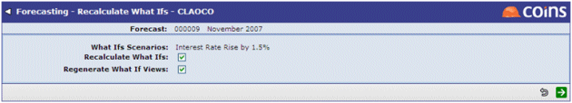
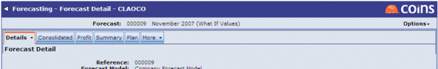

To update the forecast's what if figures:
- Select Recalculate What Ifs. The following screen will appear: 
- Use the
 to launch the recalculation.
to launch the recalculation.
Once What Ifs have been recalculated, they can be displayed in the forecast by selecting Show What If Values. The change will be reflected in the banner at the top of the screen:

The display of what if values can be switched off by selecting Show Base Values from the Options menu.
There are two printing options related to What Ifs:
- Print What If Forecast
- Compare to Base Values
These enable access to variations of the Forecast Print screen.
The final option, Save as New Forecast, allows the forecast (using what if values if required) to be saved as a distinct new forecast. A new reference number and description will be required: